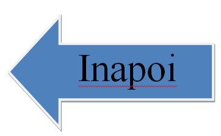
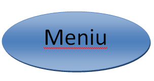

Definitie
Simbolismul a fost o miscare artistica si literara, curent sau tendinta in arta
si literatura, care se caracterizeaza prin observarea riguroasa a faptelor din
realitatea obiectiva, prin redarea lor fidela, prin preferinta pentru aspectele
urate, vulgare ale naturii omenesti etc. Curent in poezie, care cultiva
virtuozitatea imaginii, evocarea grandioasa a naturii si a civilizatiilor trecute,
descrierea stralucirii exterioare a lucrurilor, constructia savanta a limbii de la
sfarsitul secolului al XIX-lea, care se opunea romantismului, naturalismului si
parnasianismului ca reactie impotriva insensibilitatii promovate de parnasianism
si obiectivitatii exagerate a naturalismului. Astfel, in urma dezgolirii de
sentiment a poeziei de catre scriitorii parnasieni, adeptii simbolismului restituie
operelor literare emotia, sensibilitatea, trairea, insa nu direct, asemenea
romanticilor.Poetii simbolisti recurg la aluzie, la analogie, la sugestie, adunate
intr-un limbaj poetic deosebit. Starile sufletesti sunt vaporoase, vagi, fiind
descoperite treptat.Desi Moreas a dat startul acestei miscari literare, parintele
literar este considerat Charles Baudelaire, care a concentrat in poemul sau
"Corespondente", trasaturile principale ale simbolismului : dezvaluirea
corespondentelor intreuniversul exterior si lumea sentimentelor, a analogiilor
intre elemente, a sinesteziilor, potrivit careia valoarea fiecarui obiect si
fenomen din lumea inconjuratoare poate fi exprimata si descifrata cu ajutorul
simbolurilor.
Tot prin simbolism se intelege si modul de exprimare, de manifestare, propriu
acestui curent. Adesea se considera ca poeti ca Charles Baudelaire, Arthur Rimbaud
si Paul Verlaine fac parte din acest curent, dar Stephane Mallarmé este cel care
il intruchipeaza cel mai bine in poezie.Definit in sens strict, simbolismul
reprezinta un cerc literar restrans din care faceau parte poeti cum ar fi Stuart
Merrill, Albert Samain si Jean Moreas. Numele curentului a fost dat de Jean Moreas
in articolul-manifest intitulat "Le symbolisme" publicat in 1886, in ziarul
„Le Figaro”, astfel termenul de simbolism a fost pentru prima data utilizat de
poetul Jean Moreas 1886. Manifestul simbolist in acel articol, Jean Moréas vorbeste
despre o arta care va fi inamica declamatiei, a didacticismului sau a falsei
sensibilitati si proclama ca poezia trebuie sa sugereze, nu sa descrie.La acestea
se adauga folosirea cuvintelor rare, a metaforelor rafinate si pretioase, a
versurilor impare ce ar permite reinnoirea limbajului poetic.Desi simbolismul
francez a durat foarte putin, el a fertilizat poezia moderna, negand gandirea
stiintifica, rationalista. Simbolismul are meritul de a reface sensibilitatea
poeziei, apeland la aluzie, sugestie. Poetul francez Mallarme (1842-1898) a
definit rostul si rolul poeziei simboliste: "A numi un obiect inseamna a suprima
trei sferturi din bucuria poemului care e facuta sa ghiceasca putin cate putin;
a sugera, iata visul".
( Stephane MallarmG ).

